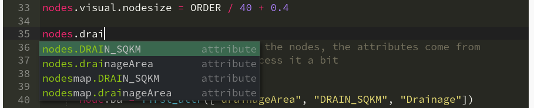
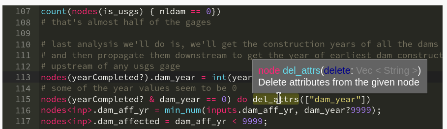
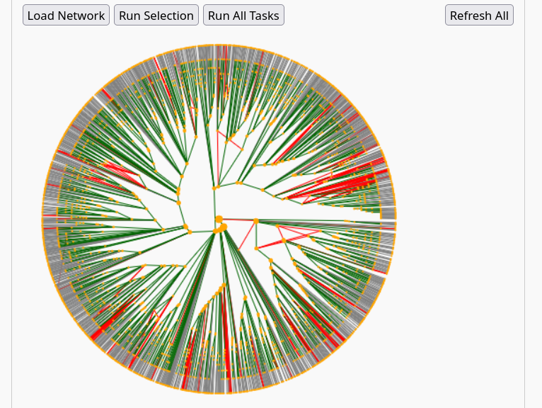

Search for functions and their help, multiple results will load as clickable buttons.
NADI System has two main components, this playground only deals with the network analysis part using the NADI DSL (Domain Specific Language). The DSL is also called the task system.
In this playground you can load network through the Network tab, and you can work with the DSL through the NADI DSL tab. You can also load networks from the DSL using the corresponding network functions.
The playground provides you with an online editor for NADI DSL with autocompletion, syntax highlighting and code execution. Although it is not exact 1:1 match with the desktop application, the online version of NADI is a powerful tool in itself that can help you with your network analysis problems.
The playground contains multiple tabs, in the left are the tabs related to network information, network/node attributes, edge attributes and NADI DSL code. On the right are the network view and examples tab.
-> symbol with one node before and one after showing a directed edge. You can group multiple nodes together within braces {} in newer versions of NADI.
Attributes in NADI can be loaded in different ways. NADI Playground uses the TOML format for both Node and Edge attributes. The Attributes tab can be used to load network attributes as key=val pairs, and node attributes as key=val pairs inside a group named after the name. Similarly, the Edge Attributes tab contains the edge attributes with nested format where the attributes are grouped under [FROM.TO] group where FROM is the starting node and TO is end ending node of the edge. Load some examples from the Examples tab to see them in effect.
NADI DSL tab is the main point of entry for any analysis, it comes with syntax highlighting, autocomplete, tooltips etc. The autocomplete shows you the attributes or functions related to the current context. It is not perfect, so I am erroring on the side of caution by showing things that might not exist or vice versa.

Similarly, the tooltip helps you understand what a function does and what arguments it does. Ideally the tooltip should appear when you are typing the function arguments, but I'm figuring out how to do that :).
You can run NADI DSL code multiple ways, you can use Ctrl+Enter on network or attributes tab to load network and attributes. And you can use Ctrl+Enter on NADI DSL tab to run the selected lines (or current line if nothing is selected). Or you can use the buttons on the top of Network View tab on the right.

The Network View tab contains the following buttons:You can learn about why NADI System might be useful to your use case in Why NADI? page of the NADI Book. Most important features of NADI are:
nodes vs single node,input vs output nodes as well as root and leaf nodes of the networks for analysis,if-else, while, for, loop, try-catch, function, import, allowing users to write their own logic, reuse code, and handle errors..dll, .so, .dynlib) through the NADI plugin system, allowing advanced users to write functions that are computationally efficient and use them as if they are native to the language itself.For more details on the DSL and the system as a whole, refer to the NADI Book located here: https://nadi-system.github.io/latest/. Refer to the book’s Learn by Examples chapter to see specific features of NADI that are related to the programming language.
Atreya, G., T. Steissberg, D. McAvoy, X. Chen, and P. Ray. 2026. “Towards an improved language for river data analysis: Demonstration for the highly-regulated Ohio River basin.” Environmental Modelling & Software, 106866. https://doi.org/10.1016/j.envsoft.2026.106866.
Mukhopadhyay, S., A. Sankarasubramanian, and C. Awasthi. 2020. “Developing the hydrological dependency structure between streamgage and reservoir networks.” Scientific Data, 7 (1): 319. Nature Publishing Group. https://doi.org/10.1038/s41597-020-00660-6.
The tasks code is simple and only shows the nodes that have multiple output nodes.